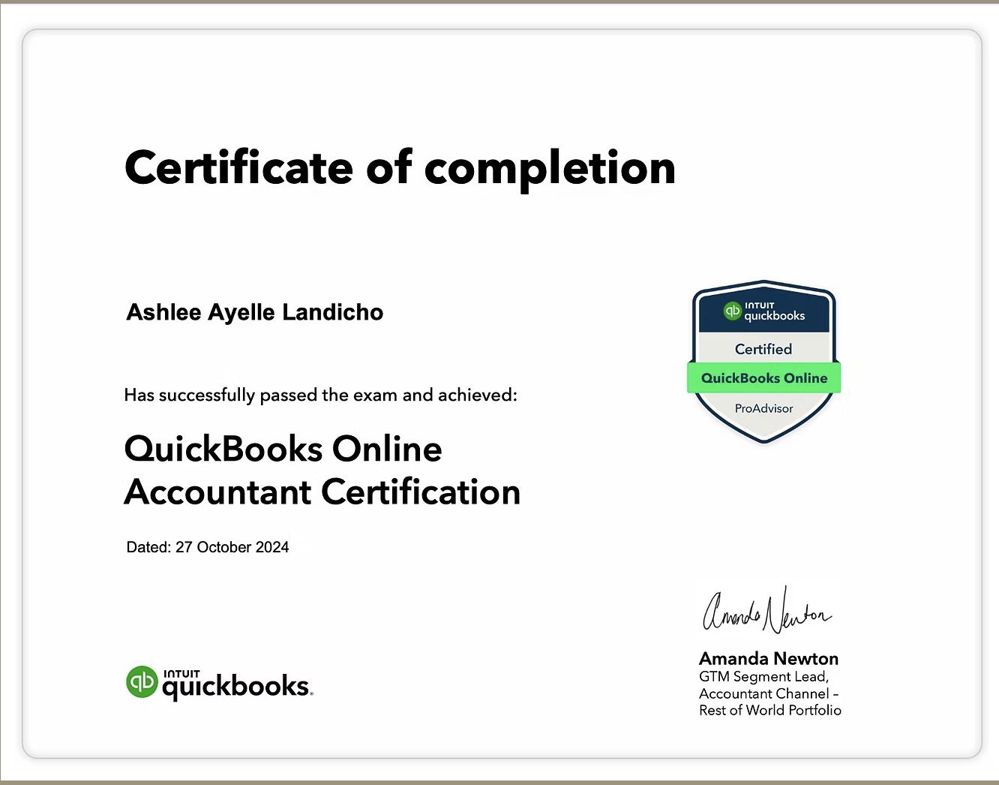

Ashlee Ayelle Landicho's Projects and Certificates

Ashlee Ayelle K. Landicho
Bachelor of Science in Accounting Information System
Email: ashleeayellekohlandicho.com
Recent Projects
1. Embark the Spark (2024)
- A case study apllying three businesses transaction cycle (expenditure, conversion and revenue) usisng SAP Business One. It examines the financial processes of a hypothetical company, "Embark the Spark," to demonstrate the ERP systems integration and efficiency.
2. IT Project Plan (2024)
- A strategic roadmap outlining the objective, scope, timeline, resources, and risk management strategies for a successfull IT project execution.
3. SmartBooks User's Manual - InfoBlitz (2024)
- A comprehensive guide on how to navigate, ulitize, and maximize the features of SmartBooks for an efficient andseamless user experience.
4. Mapua Connect (2022)
- The Mapua Connect app enhance campusengagement at mapua malayan Colleges Laguna by streamlining services, providing academic resources and enabling students to buy/sell used books and offer/find tutoring services.
Certifications
1. SmartBooks and PowerBI
FIT Academy: First in Technology
April 2024
- Trained in using SmartbBooks and PowerBI for finanial reporting, analytics, and data visualization.
- Learned to apply business intelligence tools for decision making and performance tracking.
2. Virtual Assisstant Training Course
VA Training Philippines
August 2024
- Trained in virtual assistance and social media marketing and management.
- Learned about MetaAds, project managament, executive assistance, bookkeeping, lead generation, content creation, website design and search engine optimization.
3. QuickBooks Online Accountant Certification
Intuit QuickBooks
October 2024
- Certified QuickBooks Online Accountant with proven skills in managing financial records, bookkeeping, and online accounting solutions.

4. Fundamentals Of Database Systems
Coursera Inc.
August 2025
- Acquired knowledge of database design, relational models, and SQL basis.
- Learned how to manage,store, and retrieve data effectively using modern database system.
5. Start Writing Prompts Like Pro
Coursera Inc.
August 2025
- Developed effective prompts while enhancing writing and communication.